Experience.
Three jobs, none of them glamorous, all of them about doing the same thing correctly a large number of times.
DAEYANG Co., Ltd.
9 months
Daegu, South Korea
DAEYANG is a corporate R&D institute developing thermoelectric materials and modules for energy and environmental applications. I worked across most of the line, which turned out to be the useful way to see it: a wedge that plates unevenly looks like nothing at the bath, and like a module that reads wrong three weeks later.
The line runs like this. Bi, Te, and Sb feedstock is ground to size, mixed by ball milling, and consolidated under heat and pressure into a thick cylindrical pellet. The pellet is sliced perpendicular to its axis into coins, and each coin is cut again into quarters or eighths — sector wedges. The wedges are cleaned, plated, then diced into cubes and cleaned again. Only at that point are they legs, ready for SMT assembly.
My main stretch was the plating bath: medium-phosphorus (6–8% P) electroless nickel on bismuth telluride. I handled IPA cleaning before and after, pH monitoring and solution adjustment through each run, and the handling of samples secured in process fixtures. Deposition rate and coating uniformity both track bath condition, so a drifting bath doesn't fail loudly — it leaves a coating that isn't the same thickness everywhere, on a wedge that will be cut into many legs. One uneven wedge is not one bad part; it is every leg that comes out of it.
How the wedges were held through the bath was the related problem. I proposed and designed a custom titanium holding jig to improve plating stability, producing the drawings and specifications. Implementation was deferred against production priorities, so I can't claim a finished part — but specifying a fixture against a named failure mode is the part I kept.
After dicing I ran dimensional inspection and defect classification on the legs: measuring critical dimensions against design tolerances under digital microscopy, and sorting what I found into defect types — machining error, burring, asymmetry — so the pattern rather than the individual reject was what got reported. This work was done in collaboration with the Korea Electrotechnology Research Institute (KERI).
On the assembly side I supported senior engineers building 8×8 modules, 128 legs each: preparing solder paste, setting up substrate mounting frames, loading substrates for automated paste printing and leg placement, and soldering copper lead wires to electrodes after reflow. I sourced lead-free, high-temperature paste from suppliers. Weekly output ran 20 to 30 modules, scaling past 50 during government R&D cycles.
At the end of the line I ran final electrical inspection — resistance and voltage against spec ranges, documented in Excel for traceability, nonconforming units flagged for retesting — and collected generator performance data under senior researcher guidance across five cooling configurations: forced and natural air, forced and natural water, and antifreeze-based.
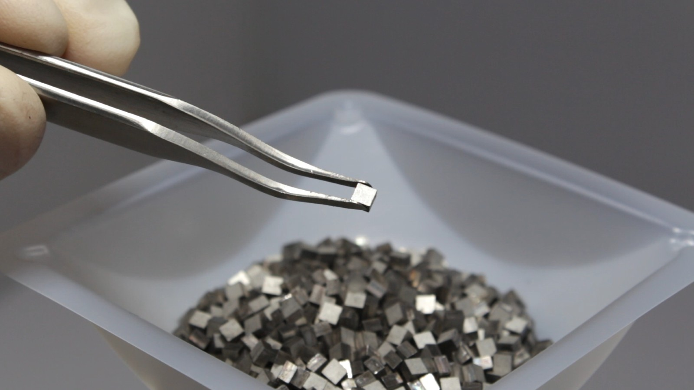

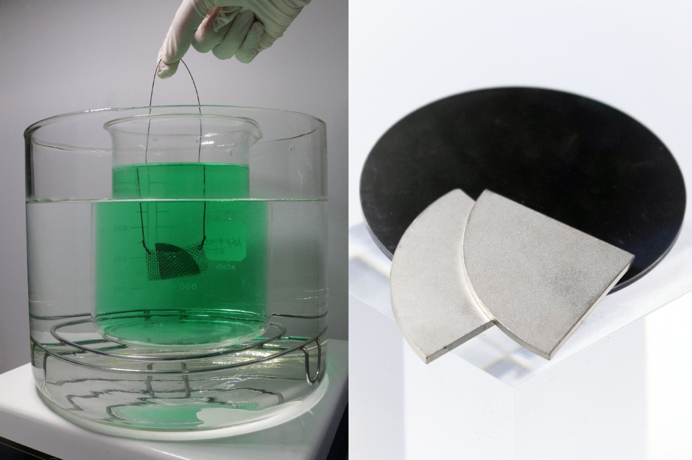
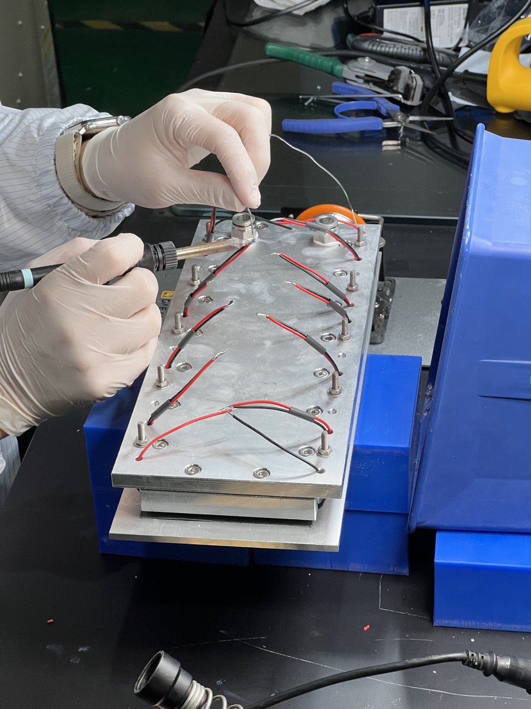
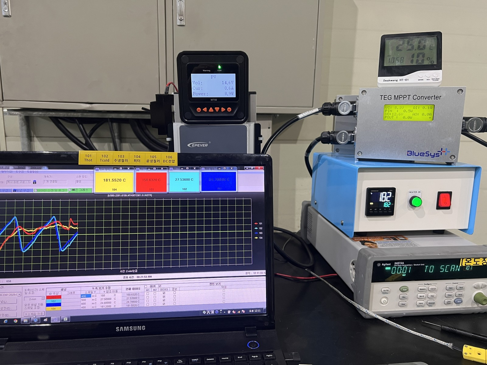
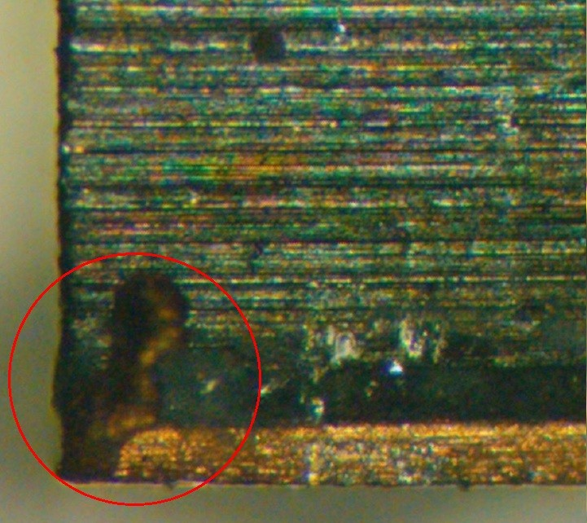
Republic of Korea Auxiliary Police
18 months
South Korea
Military service is compulsory in South Korea. I served mine in the auxiliary police in Pohang, under the Ministry of National Defense and the Korean National Police Agency, and finished as a sergeant.
For 7 months of the 18 I led a 12-officer squad through high-pressure field deployments: protest response, and missing person searches across mountainous and coastal terrain. We located 3 missing individuals and escorted them to safety, which earned an official commendation.
The rest was public safety work — managing police lines during civil disturbances, joint counterterrorism drills including chemical threat response procedures, driving support for personnel and equipment transport, and station access control while triaging civilian reports.
What it left me with is narrower than it sounds. A procedure written in advance is worth very little; a squad that has rehearsed one is worth a great deal. That distinction is most of what I think about when I read a process document now.
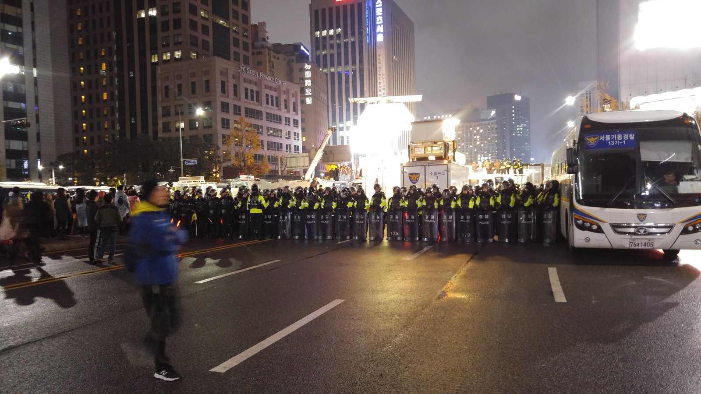
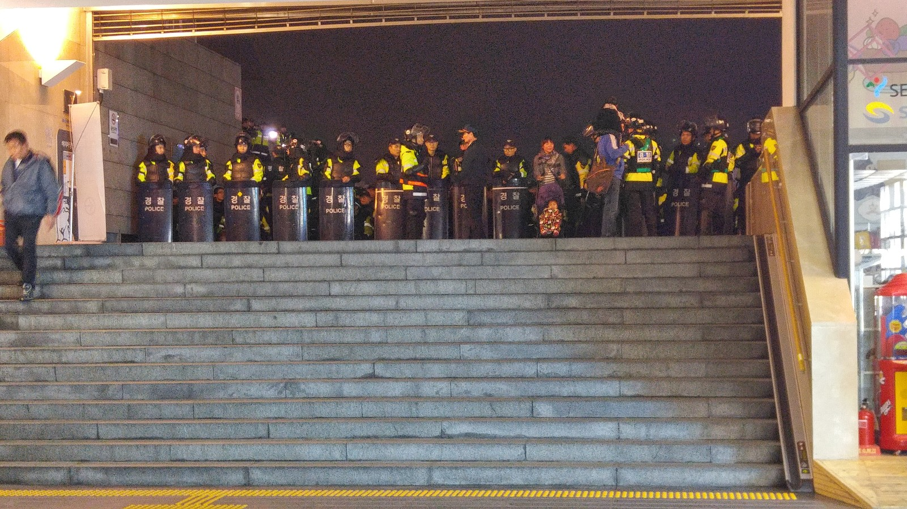
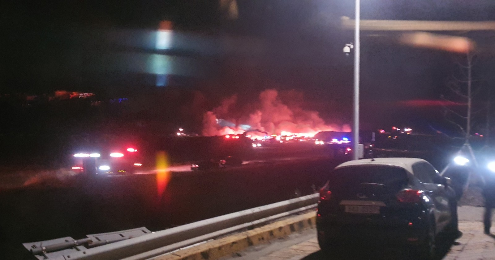
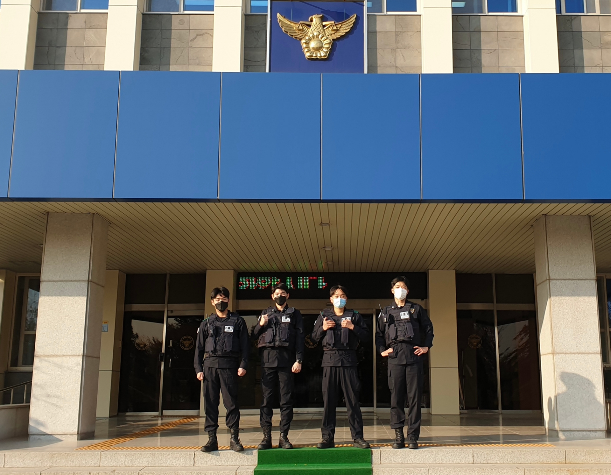
University of Wisconsin–Madison
3 months
Madison, WI
The summer after my first year I worked custodial services on campus, cleaning and resetting residence hall rooms through move-out turnover — the window where an entire building has to be emptied, cleaned, and made ready before summer occupants arrive.
It was assigned buildings, a fixed daily schedule, and a crew. I include it because it is the plainest evidence I have of something employers actually care about: I have done repetitive physical work to a standard, on a deadline, with other people depending on my share of it.
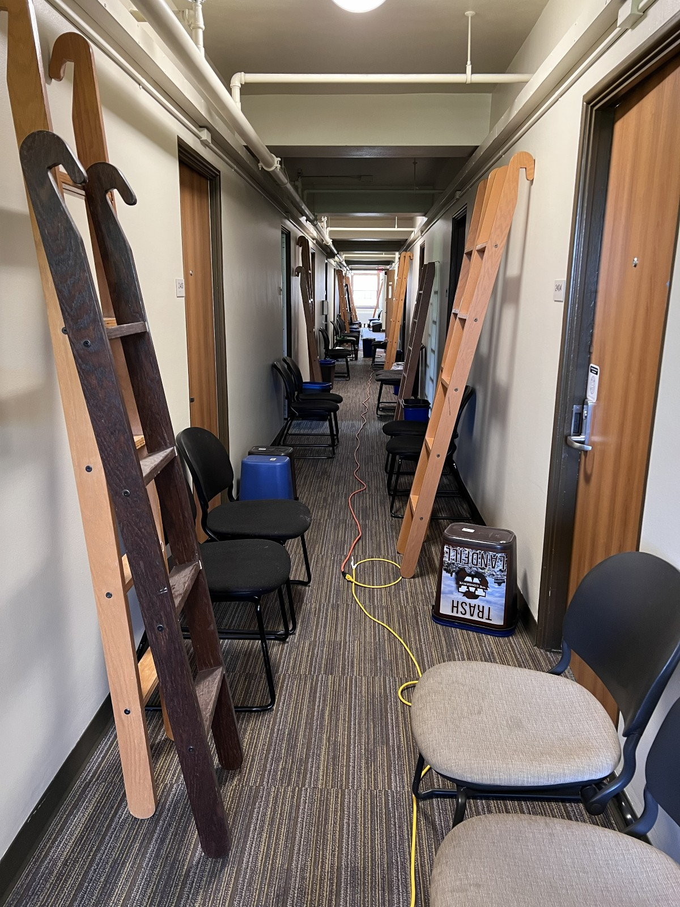
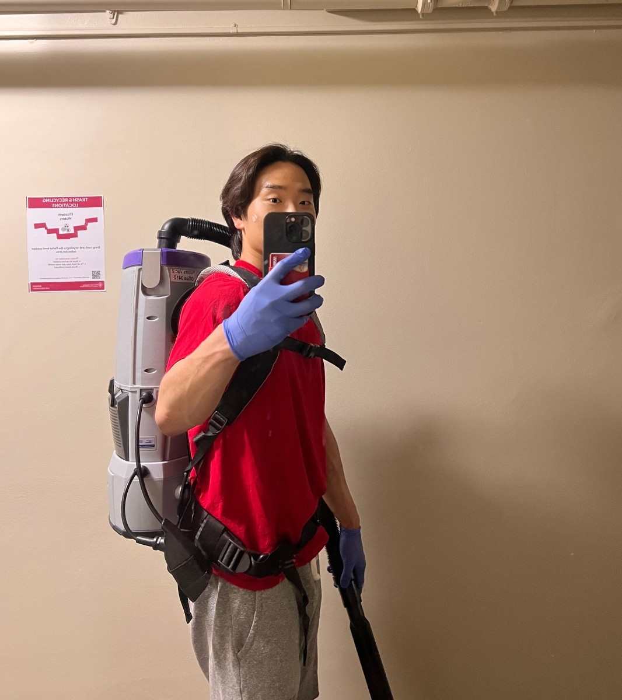
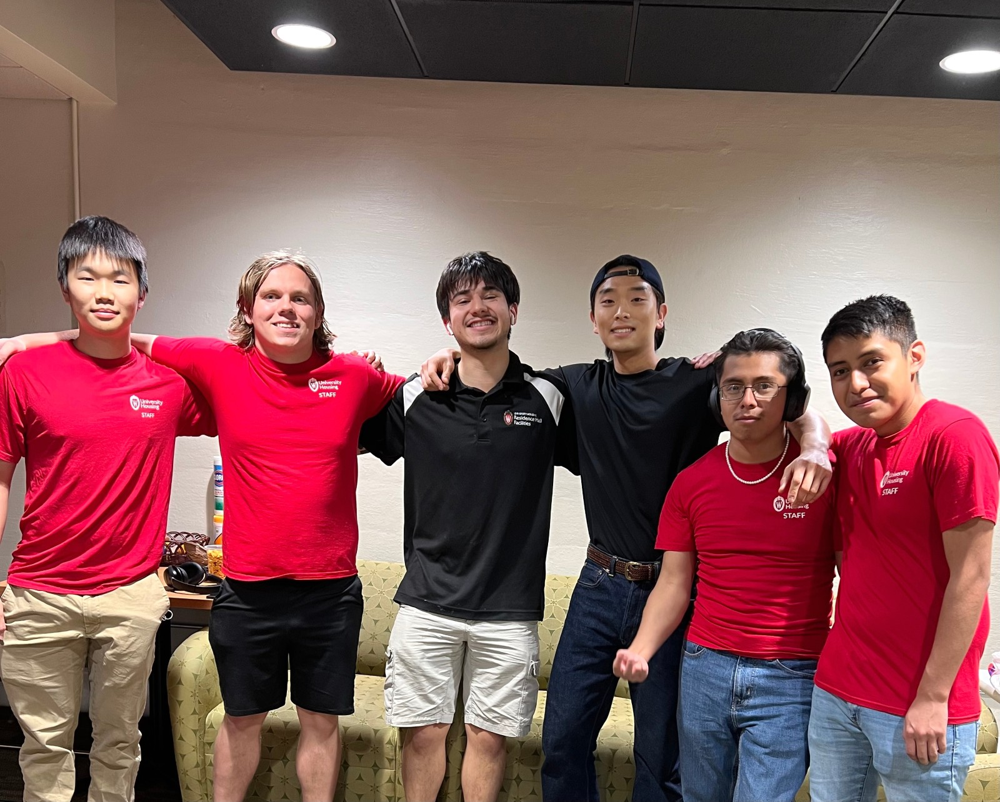